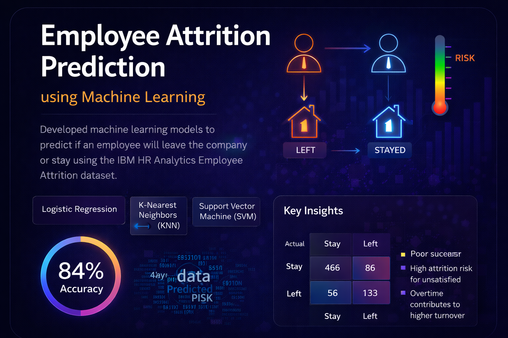
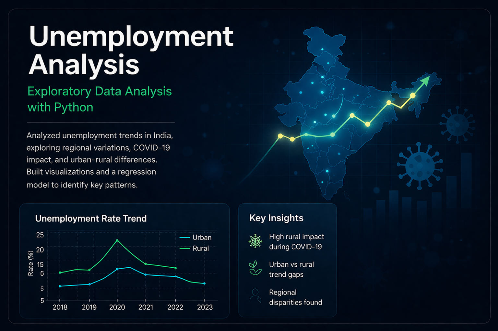
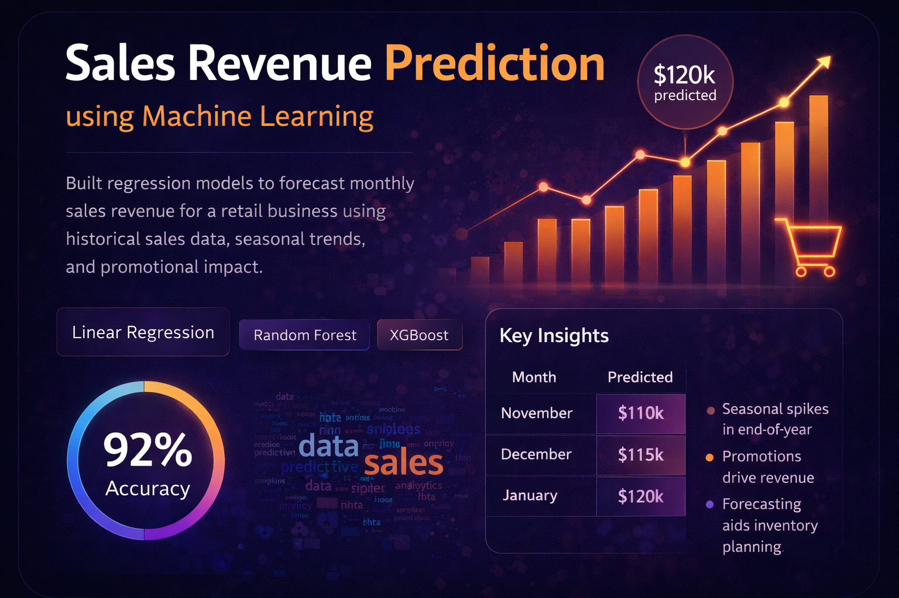

Employee Attrition Prediction using Machine Learning
Developed machine learning models to predict employee attrition using the IBM HR dataset. Implemented Logistic Regression, KNN, and SVM with preprocessing, feature encoding, and scaling. Evaluated performance using accuracy and classification metrics.

Unemployment Analysis using Python
Analyzed unemployment trends in India by studying regional variations, COVID-19 impact, and urban–rural differences. Applied data cleaning, visualization, and regression modeling to identify patterns over time.
Email Spam Detection using Machine Learning
Built a text classification model using TF-IDF vectorization and Multinomial Naive Bayes to detect spam messages. Evaluated performance using accuracy, confusion matrix, and classification metrics.

Sales Prediction using Advertising Data
Built a Linear Regression model to predict product sales based on advertising budgets across TV, Radio, and Newspaper channels. Performed correlation analysis and evaluated model performance using MSE and R² score.